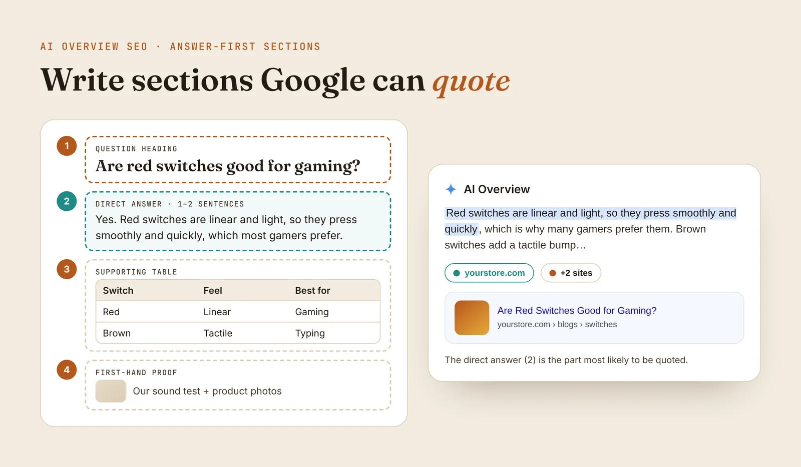
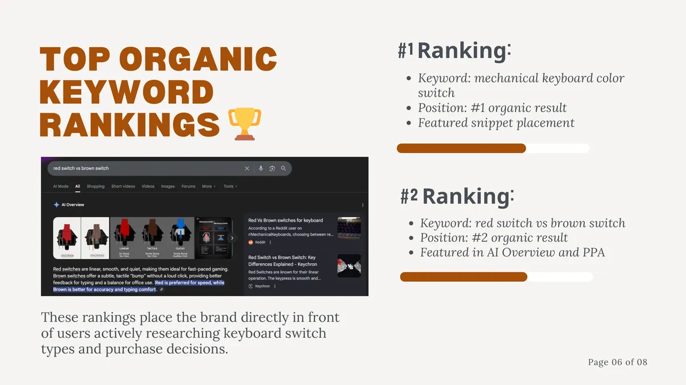

- There's no special markup, file or submission for AI Overviews. Your page needs to be indexed and eligible to show a snippet in Google Search.
- Google builds AI Overviews on its core ranking and quality systems, so normal SEO still does the heavy lifting.
- Pages that answer a buyer's question in the first one or two sentences, then back it up with tables and first-hand detail, are the easiest to quote.
- Track results in the Search Console Performance report, where AI feature traffic is included under the Web search type.
AI Overview SEO has become one of the most common questions I get from store owners. Google's AI Overviews now sit above the regular results for many shopping questions, such as "are brown switches better than red?" or "best baby carrier for newborns", and the stores cited there get seen first.
This guide separates what Google has actually said from the myths, then walks through the five steps I use to get e-commerce content cited, with a real example from Keychron.
What is AI Overview SEO?
Answer: AI Overview SEO is the practice of making your pages easy for Google to understand, trust and quote, so they appear as supporting links in Google's AI Overviews. For online stores, it mostly means writing clear answers to the questions shoppers ask before they buy.
It isn't a separate discipline from SEO. Google says its generative AI features are built on the same core ranking and quality systems as regular search, so the work overlaps heavily with good content and technical SEO.
What Google says it takes
Google's documentation for site owners is unusually direct (AI features and your website):
- To be shown as a supporting link, a page must be indexed and eligible to be shown in Google Search with a snippet.
- There are no additional technical requirements and no special optimizations needed.
- You don't need special schema.org markup, AI text files or new machine-readable files.
- Snippet controls such as
nosnippet,data-nosnippetandmax-snippetlimit what can be shown, so don't apply them to content you want cited.
Google's optimization guide adds that original, first-hand, expert content matters most, and warns against chasing shortcuts (Optimizing for generative AI features).
Step 1: Find the questions your buyers ask
- People Also Ask: search your main product keywords and note every question in the box.
- Search Console: filter queries containing "vs", "best", "how", "which" or "is". These are often already sending you impressions.
- Customer service: pre-sale questions from chat, email and reviews are gold, because competitors rarely answer them.
- Comparisons: "X vs Y" searches often trigger an AI Overview, and they're where my clients have been cited most.
Step 2: Write answer-first sections
For each question, use the question (or a close version) as the heading, then answer it directly in the first one or two sentences before you explain. This makes the answer easy for Google to extract and easy for a skimming reader to find.

Google says you don't need special phrasing or "AI-friendly" rewriting, because its systems understand meaning and synonyms. Answer-first is simply good writing that happens to be easy to quote.
Step 3: Add tables, comparisons and first-hand detail
- Comparison tables for specs, sizes and "X vs Y" questions.
- First-hand detail that only your store has: testing notes, sound recordings, measurements, photos of the real product, customer data.
- Specific numbers instead of vague claims: "45 g actuation force" beats "light and fast".
Google calls this "non-commodity" content. If ten other sites already say the same thing, there's little reason to cite yours.
Step 4: Keep the technical basics solid
- Make sure the page is indexed. Check it with URL Inspection in Search Console.
- Don't block Googlebot in
robots.txt, and don't addnosnippetto content you want quoted. - Keep important content as text on the page, not only inside images or tabs that load late.
- Link to the article from related collections and products so Google finds it.
- Keep your Google Merchant Center feed accurate, since Google uses product data in its AI shopping experiences.
If you're starting from scratch, my e-commerce SEO checklist for Shopify stores covers these basics step by step.
Step 5: Track results in Search Console
Google includes traffic from AI features in the Search Console Performance report, under the Web search type. It isn't split out by default, so track the pages and question-style queries you've rewritten and compare impressions and clicks before and after. Then check the live results by hand for your most important questions.
Case study: how Keychron's articles got cited
For Keychron, I built a group of articles around switch questions shoppers ask before buying a keyboard. Each article answers the question directly, compares the options in a table and links to the products.

The Keychron guide is the top organic result and is cited in the AI Overview and inside People Also Ask.

A comparison article ranked #2 organically and was cited in the AI Overview. Across the group, impressions grew by up to +2,264%.
AI Overview SEO checklist for store owners
| Check | What good looks like |
|---|---|
| Indexed | URL Inspection shows the page is on Google |
| Snippet allowed | No nosnippet or tiny max-snippet on key content |
| Question headings | Headings match real buyer questions |
| Answer first | A direct answer in the first 1–2 sentences under each heading |
| Tables | Comparisons, specs and sizes in an HTML table |
| First-hand detail | Testing notes, real photos or data only you have |
| Internal links | Linked from related collections and products |
| Product data | Merchant Center feed accurate and up to date |
| Tracking | Monthly check of rewritten pages in Search Console |
Myths to ignore
- "You need an llms.txt file." Google Search doesn't use it, so it neither helps nor hurts.
- "You need special AI schema." Google says no special schema.org markup is required. Structured data is still useful for rich results.
- "Chop your content into tiny chunks." Google's systems understand pages that cover several subtopics, so write for readers.
- "Buy mentions across the web." Google says inauthentic mentions aren't effective.
Frequently asked questions
Do I need special schema or an llms.txt file to appear in AI Overviews?
No. Google says there are no additional technical requirements, no special schema.org markup and no AI text files needed to appear in AI Overviews. Your page must be indexed and eligible to be shown in Google Search with a snippet.
Can I pay or submit my site to be included in AI Overviews?
No. AI Overviews choose supporting links from pages Google has already indexed, using its core ranking and quality systems. The way in is helpful, original content and solid technical SEO.
How do I track AI Overview traffic?
Google includes traffic from AI features in the Search Console Performance report under the Web search type. Watch impressions and clicks for question-style queries and for the pages you have rewritten in an answer-first format.
Can product and collection pages appear in AI Overviews?
Yes, any indexed page can be a supporting link, but in practice buying guides, comparisons and FAQ sections are cited most often for shopping questions. Keeping your Google Merchant Center feed accurate also helps your products appear in Google's AI shopping experiences.
Conclusion
AI Overview SEO isn't about tricks or new files. It's about being the clearest, most trustworthy answer to the questions your shoppers ask, on a page Google can index and quote. Find your buyers' real questions, answer each one in the first sentence or two, back it up with tables and first-hand detail, and track the results in Search Console. You can also apply the same answer-first approach to the FAQ on your collection pages.
Sources: Google Search Central, AI features and your website · Google Search Central, Optimizing your website for generative AI features

Annalyn Bernaldo
Annalyn is an e-commerce SEO specialist in the Philippines and AI-Overview strategist. Her articles for Keychron rank #1 on Google and are cited in AI Overviews, and one was featured by Backlinko.